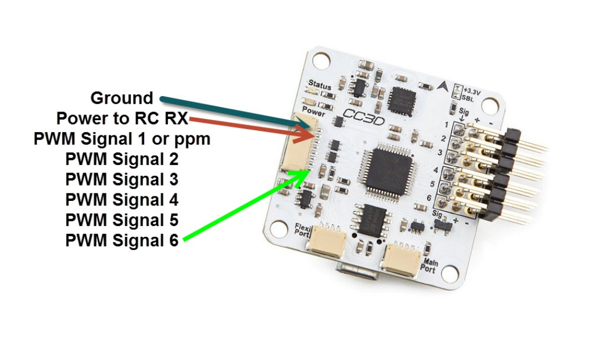
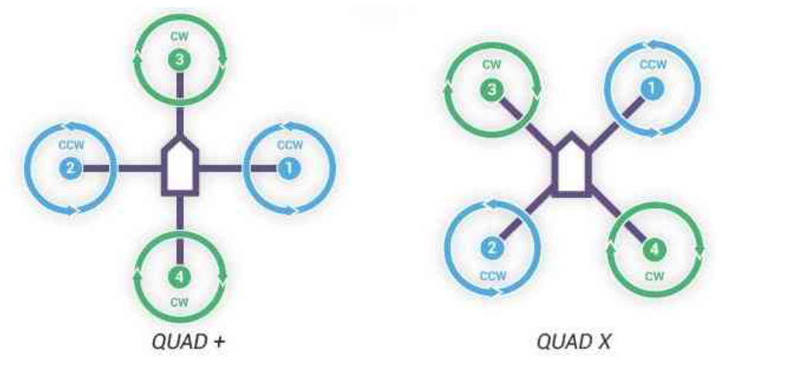
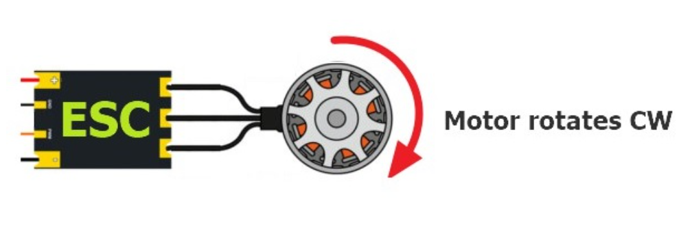

Tutoriels
Project Description
Normally we see drones controlled using an RF remote, or for autopilot using a GPS module to control it automatically by giving proper direction. However, we've approached things differently using an Arduino Uno.
The main objective of this project is to collect data and 2D video information from a specific known area. To gather this information, we assign the values of length and width that the drone can travel using Arduino programming.
As the name suggests, autopilot means that the drone will handle itself, while the control action of the drone will be managed by a flight controller equipped with built-in sensors to balance the drone. The Arduino Uno acts as the brain of the system, providing the proper signals to the flight controller. For stability and continuous operation, We used an OpenPilot CC3D microcontroller (or any flight controller), alongside a camera to capture live data and weather monitoring sensors.
Finally, the system includes a Bluetooth module to turn the drone on/off and display live data using an Android mobile device.
Step 1:
In our project, we implemented an Arduino Uno to regulate a drone's operations through Pulse Width Modulation (PWM) signals. Typically, drones are managed using RF remotes or GPS modules for autopilot functionality. However, we took a different approach by utilizing an Arduino Uno, an ATmega microcontroller board. By generating PWM signals, we controlled various aspects of the drone's behavior, including motor speed, direction, and stability. This involved interfacing the Arduino Uno's PWM pins with electronic speed controllers (ESCs) to regulate motor rotations. By adjusting the duty cycle of the PWM signals, we achieved precise control over the drone's maneuvers and functionalities

Step 2:
The subsequent phase involves Flight Controller Designing. The illustration below showcases a flight controller integrated with built-in gyroscopes, accelerometers, and auto-leveling features. This advanced controller typically arrives with proprietary software furnished by its manufacturer, designed specifically for user-friendly programming purposes.
Step 3:
Now, the next step involves selecting the type of drone. As seen below, there are two available designs for quad-format drones. The direction in which the flight controller is placed determines the chosen quad format.The chosen flight controllers will be marked with directional indications, determining the format selection. Additionally, concerning the chosen format, the propeller direction holds utmost significance, distinguished as CW (clockwise) and CCW (counterclockwise).
Step 4:
Now, to enable clockwise movement of the motor, we must connect the wires as depicted below
To achieve counter-clockwise movement, interchange any two wires so that the phase of the voltage applied to the motor changes, thus altering the motor's direction.

This section covers the connection between the motor, electronic speed controller (ESC), and flight controller.

Final Wiring Diagram With Arduino Uno